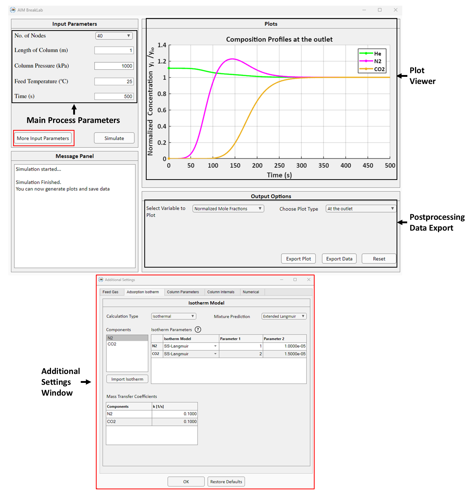

BreakLab
BreakLab is the module for isothermal/non-isothermal multicomponent fixed bed breakthrough simulation for up to 5 components. BreakLab GUI is shown below:
{kind=link}
The isotherm fitting results from IsoFit and HeatFit for different components can be directly loaded into BreakLab module.
Watch how to use BreakLab here
The mathematical model implemented in BreakLab and the required properties and parameters for breakthrough simulation are summarised below.
Mathematical Model
The mathematical model of BreakLab is based on the following assumptions:
The gas flow is axially dispersed and charecterized by an axial dispersion coefficient.
The gas phase is ideal.
Pressure drop in the column is given by Ergun’s equation.
The steady state momentum balance is applicable.
The adsorbent bed is uniform; the bed density, void fraction, and particle size are constant throughout the bed length.
Thermal equilibrium exists between gas and solid phase.
The heat transfer coefficient governing the heat transfer between column wall and bed is constant.
The wall temperature remains constant.
The mass transfer resistance between solid and gas phase is governed by Linear Driving Force (LDF) model.
The concentration, pressure, and temperature gradients in the axial directions are negligible.
The material, energy and momentum balances are developed based on conservation of mass, energy, and momentum in the fixed bed, respectively. The resulting balance equations are partial differential equations (PDEs) and consist of mole conservation of component \(i\), overall mass balance, conservation of total momentum and the total energy of the system. The balance equations are summarised in table below. Please check the journal article for a more detailed discussion on deriving these forms of balance equations.
Expression |
|
|---|---|
Component mole balance |
\(\varepsilon_{t}\left(\frac{\partial y_{i}}{\partial t} + \frac{y_{i}}{P}\frac{\partial P}{\partial t} - \frac{y_{i}}{T}\frac{\partial T}{\partial t} \right) = D_{ax} \frac{\varepsilon_{b} T}{P}\frac{\partial}{\partial z} \left(\frac{P}{T} \frac{\partial y_{i}}{\partial z}\right) - \frac{\varepsilon_{b} T}{P}\frac{\partial}{\partial z} \left(\frac{y_{i}vP}{T}\right) - \frac{\rho_{b,ads}RT}{P} \frac{\partial q_{i}}{\partial t}\) |
Total mole balance |
\(\frac{\partial P}{\partial t} = \frac{P}{T}\frac{\partial T}{\partial t} - \frac{\varepsilon_{b} T}{\varepsilon_{t}}\frac{\partial}{\partial z} \left(\frac{vP}{T}\right) - \frac{\rho_{b,ads}RT}{\varepsilon_{t}} \sum_{i\in I} \frac{\partial q_{i}}{\partial t}\) |
Energy Balance |
\(\left(\rho_{b,ads}C_{p,ads} + \rho_{b,ads}C_{p,a}\sum_{i \in I} q_{i}\right)\frac{\partial T}{\partial t} = K_{z} \frac{\partial^{2}T}{\partial z^2} - \frac{C_{p,gas}\varepsilon_{b}}{R}\frac{\partial}{\partial z}(vP) + \rho_{b,ads} \left( \sum_{i \in I} \left(-\Delta H_{ads,i}\frac{\partial q_{i}}{\partial t}\right) - C_{p, a}T \sum_{i \in I}\frac{\partial q_{i}}{\partial t}\right) - \frac{2 h_{in}}{r_{in}} (T - T_{wall}) - \frac{C_{p,gas}\varepsilon_{t}}{R}\frac{\partial P}{\partial t}\) |
Linear Driving Force |
\(\frac{\partial q}{\partial t} = k_{i}(q_{mix, i}^{*} - q_{i})\) |
Ergun Equations |
\(- \frac{\partial P}{\partial z} = \left(\frac{150 \mu}{4r_{p}^{2}}\right) \left(\frac{1-\varepsilon_{b}}{\varepsilon_{b}}\right)^2v + \left(\frac{1.75 \rho_{gas}}{2r_{p}} \left(\frac{1-\varepsilon_{b}}{\varepsilon_{b}}\right) \right)v^{2}\) |
Total porosity \(\varepsilon_{t}\) is calculated using the bulk and paricle porosities, \(\varepsilon_{b}\), \(\varepsilon_{p}\),
Axial dispersion coefficient \(D_{ax}\) is calculated using,
Boundary Conditions
BreakLab uses the Danckwerts boundary conditions (BCs) for dispersed plug flow system. The BCs are summarised in table below.
Inlet (\(z = 0\)) |
Outlet (\(z = L\)) |
|
|---|---|---|
Mole fraction (\(y_{i}\)) |
\(D_{ax} \frac{\partial y_{i}}{\partial z}|_{z=0} = -v|_{z=0}(y_{0, i} - y_{i}|_{z=0})\) |
\(\frac{\partial y_{i}}{\partial z}|_{z=L} = 0\) |
Temperature (\(T\)) |
\(K_{z} \frac{\partial T}{\partial z}|_{z=0} = -\varepsilon_{b}\rho_{gas}C_{p, gas}v|_{z=0}(T_{0} - T|_{z=0})\) |
\(\frac{\partial T}{\partial z}|_{z=L} = 0\) |
Velocity (\(v\)) |
\(v|_{z=0} = v_{0}/\varepsilon_{b}\) |
None |
Pressure (\(P\)) |
\(P|_{z=0} = f^*(v|_{z=0})\) |
\(P|_{z=L} = P_{0}\) |
* here \(f\) represents the Ergun equation. Only the velocity is specified at inlet and pressure is back calculated using Ergun equation.
Together the balance equations and BCs consitute the mathematical model of BreakLab.
Numerical Simulation
The model equations are nondimensionalized to resolve the steep gradients in the adsorption processes and faster convergence. The scaling variables used for nondimensionalization are as follows:
The dimensionless equations are derived using the scaled variables above. BreakLab employs finite volume method (FVM) along with weighted essentially non-oscillatory (WENO) scheme for spatial discretization of the above PDEs. Spatial discretization yields ordinary differential equations (ODEs). BreakLab uses MATLAB’s built in stiff ODE solver ode15s for solving the systems of ODEs.
Breakthrough Simulation Input
The table below summarises all the input properties and parameters required for running a breakthrough simulation in BreakLab.
Parameters |
Description |
Units |
Remarks |
|---|---|---|---|
\(T_{0}\) |
Feed gas temperature |
\(^\circ\mathrm{C}\) |
\(-\) |
\(v_{0}\) |
Superficial feed gas velocity |
\(m/s\\\mathrm{OR}\\\mathrm{std. }\quad cm^3/min\) |
Standard state refers to \(0\,^\circ\mathrm{C}\) and \(101325\,Pa\) |
\(y_{0, i}\) |
Feed gas mole fraction of component \(i\) |
\(-\) |
\(-\) |
\(MW_{i}\) |
Molecular weight of component \(i\) |
\(kg\,mol^{-1}\) |
\(-\) |
\(D_{m}\) |
Molecular diffusivity of gas |
\(m^{2}/s\) |
\(-\) |
\(K_{z}\) |
Thermal conductivity of gas |
\(W/m/^\circ\mathrm{C}\) |
\(-\) |
\(C_{p, gas}\) |
Specific heat capacity of gas |
\(J/mol/^\circ\mathrm{C}\) |
\(-\) |
\(\mu\) |
Viscosity of gas |
\(Pa\,s\) |
\(-\) |
\(P_{0}\) |
Absolute pressure of adsorber column |
\(kPa\) |
This pressure refers to the pressure at the outlet of column. |
\(L\) |
Length of adsorber column |
\(m\) |
\(-\) |
\(D_{col}\) |
Inner diameter adsorber column |
\(m\) |
\(-\) |
\(h_{in}\) |
Inside heat transfer coefficient |
\(W/m^{2}/^\circ\mathrm{C}\) |
For running adiabatic breakthrough simulations specify this equal to \(0.0\). |
\(T_{wall}\) |
Temperature of adsorber wall |
\(^\circ\mathrm{C}\) |
\(-\) |
\(\rho_{b,ads}\) |
Bulk density of adsobent |
\(kg/m^3\) |
\(-\) |
\(D_{p}\) |
Diameter of adsorbent particles |
\(m\) |
\(-\) |
\(\varepsilon_{b}\) |
Bulk porosity of adsorbent bed |
\(-\) |
\(-\) |
\(\varepsilon_{p}\) |
Particle porosity of adsorbent particles |
\(-\) |
In case of not knowing the particle porosity specify this as \(0.0\). |
\(C_{p,ads}\) |
Specific heat capacity of adsorbent |
\(J/kg/^\circ\mathrm{C}\) |
\(-\) |
Isotherm parameters |
Isotherm parameters for the chosen isotherm model |
\(-\) |
Need to provide this for each component except for carrier gas. The number and types of isotherm model parameters depends on the chosen isotherm model. The isotherm model and parameters for the given component obtained from IsoFit or HeatFit can be imported as well. |
\(\Delta H_{ads, i}\) |
Heat of adsorption of component \(i\) |
\(kJ/mol\) |
\(-\) |
\(T_{ref}\) |
Reference temperature used for isotherm fitting |
\(K\) |
\(-\) |
\(k_{i}\) |
Mass transfer coefficient of component \(i\) |
\(1/s\) |
\(-\) |